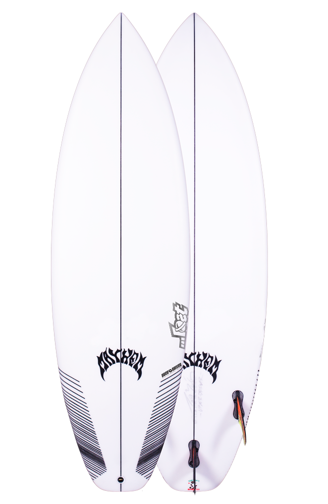

SURFBOARDS
VIDEOS
DEALERS
USA
ALL SURFBOARDS
VOLUME CALCULATOR
TECHNOLOGY
CUSTOM
BLOG
TEAM

UBER DRIVER
DESCRIPTION
DIMS
PHOTOS
VIDEOS
TECHNOLOGY
“Uber” means excessive, beyond, and above all. The new Uber Driver is just that. Excessive fun, beyond expectations and above all – a great everyday surfboard. It’s designed to further blend the barriers between hybrids and Pro-Formance surfboards. The Uber Driver features the outline and rocker/concaves from the back half (engine room/control center) of the DRIVERS currently ridden in smaller waves on tour by Kolohe Andino and Griffin Colapinto. It is then blended to a lower, wider, faster, more forgiving and playful nose. The tail features a low centerline rocker with a curvy rail line rocker under the rear foot, that transitions from a generous single/double concave through the front fins, to a noticeable vee behind the rear fin and out the tail. The nose rocker and forward outline was imported from our Rocket series outlines, and allows this board to be ridden shorter, with more speed out the gate and more drive and stability for everyday surfers. The outline and rocker are blended in a way that enables the board to still be surfed like a modern Pro-formance shortboard. It just feels like you’e cheating a little. The Uber-Driver is the Ripper’s Pro-formance hybrid. Uber-ripping fun for everyone. UPDATED OCTOBER 2018 Based off of Team rider and overall feedback we fine tuned, updated and evolved the UBER DRIVER over the course of 2018. The general consensus being that the UD needed a decent wave to come to life. Almost like HPSB, but the team wanted a small wave speed machine. A Toy, for going mad in less than stellar surf. Blowing off steam. The Team spoke, and we listened. The results have netted a flatter, fatter, faster, funner small wave flying machine. Mason Ho and Ian Crane both rode The updated UBER DRIVER-19 to the final of The “STAB HIGH” Wave Pool event. Michael Rodrigues and Yago Dora are both calling the New UBER DRIVER their all time favorite alternative shape. Wider nose and tail, with a slightly lower overall rocker, and with more emphasis on small sub par surf. This being when our team, and most who ride “Pro_Formance” style boards, would actually want to use the UBER DRIVER. The dims are similar, but due to changes in the shape, the volumes have increased. Check out the revised stock dims above. For those who have, or are interested in, an original UBER DRIVER, or want to replicate or update one, the original dims are still listed in the tab below. This board can be custom ordered any time. Just make sure your state “UBER DRIVER-2018 Original”.